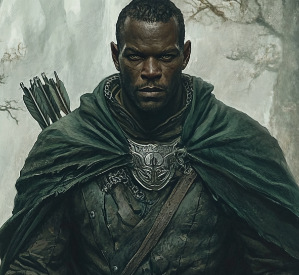

Ranger of the Dúnedain · Warden of the Eastern Line · He Who Asked Before He Acted · Bearer of the Silver Clasp · She-Who-Wonders' Quiet Brother on the Road East

A Dúnedain man past his first youth, close-cropped, dark-eyed, the weight of long watches settled at the shoulders. A green-grey cloak of the Northern make, clasped at the throat with the silver gorget engraved in the star-cross pattern of his line. A quiver of green-fletched arrows at his back; leather corslet beneath; the sword at his hip rather than the spear.
His warmth is rare and exact. The chronicle has noted it on the few occasions it has shown.
Damrod is a Ranger of the North in the second generation of the watch after Brandor and Orlec — old enough to have heard their names and learned from their methods, young enough not to have served beside them as equal. He has held the eastern line for years, the unglamorous register of the Dúnedain watch: the corruption that creeps west out of the Misty Mountains' shadow, the shadow wolves that move under the new moon, the cultists whose sigils he has begun to recognise on sight. He has no Patron named. The chronicle has not given him one; the watch is itself his calling and its keeping is his lord.
Composed to the point of silence, but not in Celenneth's register. Where Celenneth's silence is the Dúnedain refusal to declare, Damrod's is the warden's habit of listening. He arrives at conclusions before others have finished speaking and seldom feels the need to share that he has. When he speaks he is precise; when he is moved his warmth is the chronicle's most carefully rationed currency, used four times across the months it has shown him. He laughs rarely and well. He asks the right question before the wrong moment — what about Linnea? — and waits for the honest answer before proceeding.
That he is dependable. That his arrow finds the mark he intended for it. That when he embraced Celenneth at the parting he did so with a softness the chronicle had not yet shown him capable of, and that the lack of speech around the embrace was not absence of feeling but the proper expression of it. That he and Hallas have ridden east together carrying something unfinished, and that the something is partly the watch and partly themselves.
To follow the corruption east to its source; to read the silver clasp's watchful eye to the meaning it has not yet given up; to keep the watch Brandor and Orlec did not live to keep. Current calling — Warden
To know what passed between him and Hallas in the lodge as something that may yet be named, when there is time and a fire and a roof; to ride east meanwhile without pressing it. Current heart — the unfinished thing on the eastward road
The past never seems to stay buried, does it? In the watchtower, before the hidden compartment
No, it doesn't. But sometimes that's not the worst thing. The answer he received; the doctrine he chose to take on
You're not the only one who wonders. To Hallas, in the lodge, sitting close enough to feel the other's presence
A Heart-led ranger build. Strength 5 is the long-watch endurance; Heart 6 is the conviction that holds the road; Wits 4 is the operational baseline rather than the analytical edge. Damrod is not the loremaster Celenneth is — his Lore rank is half hers — but his Heart is higher, and the chronicle has shown this everywhere it matters: the rare warmth, the embrace at parting, the question asked before the act. The build's argument is that what holds the watch is not cleverness but conviction; that the man who keeps the line east of the Frost Maw does so because he believes the line can be kept.
Valour 1 and Wisdom 1 with no Fellowship Focus on the sheet are the chronicle's quiet truth: Damrod is not a paragon in either register and has not yet bound his Fellowship to a named person. He met the family at the Frost Maw and rode away from them eastward before the bond could formalise itself on the sheet. The blank Fellowship slot is the chronicle's most honest statement about him. Whatever was forming did not get the chapters it would have needed.
Endurance at maximum and Hope at maximum, no Scars yet on the sheet, and Load 0 is the build's most striking number: the corslet and the bow and the sword exist on the sheet but their burden is not registered on the body. This is the warden in fighting trim, the road not yet leaning on him. The chronicle has shown him after the Frost Maw with everything intact. What he will accumulate riding east, the chronicle does not yet know.
| Cultural Blessing | Kings of Men, Allegiance of the Dúnedain. The same inheritance Celenneth carries — Númenor and Arnor in a single granted line. Damrod's allegiance is operational rather than declared. He has not lifted a king-blade like Nurhael's, but he has worn the watch his whole adult life, and the watch is the same inheritance. |
| Calling | Warden. Not the Messenger calling Celenneth carries; not Eryndil's Scholar. Damrod is the keeper of a piece of country and a piece of the watch — the man whose work is to know who and what moves through his ground, and to respond accordingly. The Calling is the chronicle's signal that he does not seek the road; he is found by what comes onto his road. |
| Distinctive Features | Honorable. Subtle. Two features only — a sparse character sheet for a sparse register of being. Honorable is the structural fact of him: he asked about Linnea, he chose against assumption, he stood beside what he had promised to stand beside. Subtle is the operational register: he moves unannounced, recognises what others miss, holds intelligence he does not display. The pairing is precise. Honor without subtlety would have made him a paladin; subtlety without honor would have made him a spy. He is neither. |
| Shadow Path | Path of Despair. The chronicle's argument that what threatens Damrod most is not the curse of an old enemy but the slow erosion of belief in the watch's worth. The same Path Linnea carries, working at him in a different register. The eastern line has consumed his predecessors; the corruption he tracks does not retreat; the silver clasp in his pocket bears an eye whose meaning he cannot yet name. Despair is the temptation he refuses each morning he saddles his horse. |
| Weapon Group | Rating | Associated | Notes |
|---|---|---|---|
| Swords | 2 | Heart | His primary trained weapon. Heart-keyed, which is the right register for a ranger whose discipline is conviction rather than cunning. The blade has done its work at the wraith chamber and at the cultists' canyon ambush. |
| Bows | 0 | Wits | Untrained as a proficiency, yet the bow is in his gear and the green-fletched quiver is on his back in the portrait. The chronicle's reading is plain: he carries the bow as a tool of the watch — for hunting, for signalling, for the careful shot at distance taken with patience rather than expertise — but he is not the marksman of his pairing. That register belongs to Hallas's spear and to Celenneth's hand. |
| Spears | 0 | Wits | Untrained. The spear is Hallas's weapon, and the chronicle has been careful to differentiate them by it. |
| Axes | 0 | Strength | Untrained. |
◆ indicates a Favoured skill.
| Awe | 1 |
| Athletics | 2 |
| Awareness | 3 |
| Hunting | 2 |
| Song | 0 |
| Craft | 0 |
| Enhearten | 0 |
| Travel | 2 |
| Insight | 0 |
| Healing | 2 |
| Courtesy | 0 |
| Battle | 2 |
| Persuade | 0 |
| Stealth | 2 |
| Scan | 1 |
| Explore | 2 |
| Riddle | 0 |
| Lore | 2 |
Awareness Favoured at 3 is the build's keystone — the warden's eye, the recognition of the wrong silhouette in the tree line, the silver-clasp eye perceived as significant on the moment it was first turned over. Hunting, Healing, and Lore all Favoured at 2 cover the rest of the warden's working register: the food brought to the camp, the wound dressed before it goes bad, the rune read off the wraith's hide before the chant begins. Battle 2 is the field-leader's competence — he knows tactical position, he calls the line when the line needs calling, but he is not the captain of the company. Persuade, Enhearten, Courtesy, Awe, Riddle, Insight, Song and Craft all at 0 or 1 are not omissions. They are the build's argument that he is the watcher and the doer, not the orator and not the artisan. Song at 0 is the most striking — he does not sing, and the chronicle did not give him the lay over Lif's grave that Celenneth might have offered. He is the silence the lay was sung into.
| Virtue / Reward | Type | Effect |
|---|---|---|
| Shadow-Lore | Distinctive Feature / Lore | The accumulated knowledge of how the Shadow operates in the eastern country: the brand-marks, the bound-creature signs, the silver-clasp eye motif, the corruption's slow seep west of the Misty Mountains. The chronicle has shown him reading these without hesitation. The sheet's single recorded Reward is this — the warden's specialised reading made structural. |
A sparser rewards table than any of the other companions — exactly one entry. The chronicle has been frank about Damrod's situation: he has been a working ranger for some time without ever stopping long enough to accumulate the customary inventory of Cultural Virtues. The Frugal standard of living is not the elven asceticism of Eryndil; it is the working watchman's truth that what he has not earned to keep he does not keep. The next purchases on the sheet, if he ever returns from the eastern road to spend them, would plausibly be a Cultural Virtue (Hardiness would be the chronicle's first suggestion, given the Path of Despair pressing on him) and a Reward suited to the cloak or the silver gorget worn at his throat.
| Adventure Points (current) | 0 |
| Skill Points (current) | 0 |
| Treasure | 0 |
Zero across the board. He has spent everything he has earned on the watch already, and what he is carrying east is the work itself rather than its rewards.
| Item | Damage | Injury | Load | Notes |
|---|---|---|---|---|
| Sword | 4 | 16 | 2 | Dúnedain make; the working blade of the watch rather than an heirloom. Held under the Swords proficiency at rank 2. Has done its work at the wraith chamber, the cultists' ambush, and the warg-tracking that opened the Frost Maw road. |
| Bow | 3 | 14 | 2 | Green-fletched arrows, quiver at the shoulder. Carried untrained as a proficiency — used for hunting and for signalling and for the careful shot rather than for the volley. The chronicle's economy: the bow is on the sheet because the warden travels with one, not because he is its master. |
| Unarmed | 1 | — | 0 | The ranger's hand at need. |
| Item | Protection | Load | Notes |
|---|---|---|---|
| Leather Corslet | +2 | 4 | The working armour of the watch; the heavier register of leather rather than the elven supple kind. Beneath it, the green-grey ranger cloak that is the visible piece of him in the portrait. |
| The Silver Clasp | Found in the watchtower's hidden compartment with Hallas. A silver clasp bearing a watchful eye. The motif unsettled him for reasons he could not name; the chronicle has been patient with that unsettling. He carries the clasp east with him now; it is the token of his current errand. The eye is one of the eyes — the iron eye on Celenneth's pendant, the eye-sigil on the dead bandit in Book II, the eye that appears now in the watchtower at the Frost Maw's borders. The chronicle has been quietly building this motif since the second book. |
| The Coded Ranger's Journal | Also recovered from the watchtower's hidden compartment. A working ranger's notebook, ciphered in a hand he is in the process of breaking. The compartment's existence proves the watchtower was a Dúnedain intelligence post; the journal will eventually yield the records of whose watch it kept. He is taking the journal east in the saddlebag with the silver clasp. |
| The Map Fragment | Marked with symbols along the Frost Maw's borders. Partial; what it is the partial of, he and Hallas are riding to discover. The fragment is the third recovered piece, the chronicle's three-token recovery that the watchtower yielded. |
| The Silver Gorget at the Throat | Visible in the portrait — a silver pectoral plate engraved in the star-cross pattern of his ranger line. Worn beneath the cloak's clasp; functional defensively at the hollow of the throat and identifying as well. The chronicle has not mentioned it explicitly in text but the portrait's clear detail makes it part of the kit. It is the unaccumulated treasure: a thing carried because it was given by someone older than him to wear it, not because it was earned in a chapter. |
| The Carnival Prize | The carved wooden token Damrod won at the ring-toss stall at the spring festival and handed silently to Linnea with a smile. Linnea kept it. He did not. The chronicle understood this as significant without dwelling. |
Load 0 on the sheet is the chronicle's most surprising honesty. The corslet at 4, the sword at 2, the bow at 2 should each register on the body's working weight; that they do not is the chronicle's argument that Damrod has internalised his gear to the point where it is not felt. The working ranger of decades reads as Load 0 not because he carries nothing but because he carries it as the body's own. The chronicle has shown the same with Celenneth, where the mithril shirt is registered but the Warden Blade's weight is treated as expected. Damrod is at the further end of this discipline.
His Warden Calling is not the Bree-folk register Linnea operates in — she wardens her household, her hearth, her people in plain sight. Damrod wardens a country no one else is watching. The eastern line where the corruption seeps in west of the Misty Mountains has no city, no king's host, no Dúnedain village that depends on his keeping it. He holds it for the reason Brandor and Orlec held the northern line: because the line is there to be held, and someone has to do the work. The doctrine assumes no audience and no reward; the watch is its own justification. The Path of Despair presses precisely on this assumption.
The chronicle's most important Damrod scene is small. Before anything intimate could happen between him and Celenneth, he asked: what about Linnea? The asking was the condition of the chronicle's trust in him, and Celenneth's honest answer was the condition of his proceeding. The doctrine is general: he reads the situation in front of him, identifies the person who has a claim he has not yet heard, and asks them — through their proxy or directly — before he acts. The watch operates the same way in the field: the prisoner taken is questioned before disposed; the unknown camp is observed before approached; the bound creature is named before struck.
Honorable and Subtle as paired features are not in tension. Honor without subtlety would have made him incapable of the work — the spy's craft, the careful misdirection, the watcher's invisibility are required for the eastern line. Subtlety without honor would have unmade him by the third year. The pairing is the doctrine: subtle in method, honourable in measure. The silver clasp in his pocket is unsettling to him precisely because the eye it bears is the work of subtlety without honor — the brand-makers' tool, the slaver's mark — and the doctrine forbids him from setting it down even though every instinct says throw it into a river.
The conversation with Hallas in the lodge is the chronicle's most economical statement of his interior. Hallas named the wondering; Damrod answered you're not the only one. He did not press it. He did not perform the wondering further. He sat close enough to feel the other's presence and let it be what it was. The doctrine: wonder is real, wonder is welcome, wonder does not get to displace the work. The eastern road comes first because the eastern road is what is in front of him. What is between him and Hallas may yet be named, in time, when there is time. He is willing to wait. He has been waiting for some while already.
Shadow-Lore as his sole Reward is operational doctrine. He has spent his career reading the Shadow's marks, and the chronicle has shown him recognise them on sight: the runes on the frost hounds' hides as binding, the brand-tools and bound-creature signs, the silver clasp's eye as connected to a larger sigil. The reverse is also true: the Shadow has learned his methods and his country. He is the watcher who has accumulated being watched as the cost of his lore. The eastern road carries that cost forward with him.
| Brandor and Orlec | The names he heard as a younger ranger of the company that held the line before him. He recognised Celenneth as their protégé on the first introduction at the snowfields above the Frost Maw — the detail that made the alliance feel real rather than convenient. He never served beside them as equal. He buried them with Celenneth and Linnea and Hallas in the northern hills. They are his line's elders, and what they did and how they died is the working pattern of his own probable end. |
| The Eastern Line | The country he has held for years. The chronicle has not named the specific dales and ridges of his watch — the Dúnedain do not publish their grounds — but the country has shaped him as decisively as Lindon shaped Eryndil. He moves through it as one moves through a long-known room. |
| Hallas | His partner on the road and at the watch. The chronicle has not yet shown the origin of their pairing — when they first rode together, who chose whom — but it has shown the result: two rangers whose silences are companionable rather than parallel, who can be sat close enough to feel each other's presence and not need to put what they feel into words. The chronicle planted Hallas's wondering at Celenneth and Linnea's closeness in the lodge, and Damrod's answer; what is between them was already there before either of them named it. |
| The Watchtower | The hidden compartment, the journal, the map fragment, the silver clasp with the watchful eye. The chronicle's signal that someone in his line had been tracking the same threads he is tracking now, before him. The watchtower's existence reframes his work — he is not the first to read these signs. He is the heir to the reading. The silver gorget at his throat is part of this inheritance. |
| The Shadow Itself | His Reward is Shadow-Lore; the lore was acquired from the source. The Dúnedain ranger of the eastern line cannot read the Shadow's marks without having spent years near them. The chronicle has been honest about what proximity costs: the Path of Despair is the precise wound of that proximity. He has not yet paid a Scar for it. He may yet pay several. |
The Northern watch teaches that the line is held without acclaim and that the watchman who needs acclaim has already lost. Damrod has internalised this fully. He inherits also from his line a specific reading of honour as act as you would have been done by, applied operationally in field conditions — the prisoner asked, the comrade asked, the question raised before the act rather than after. The pairing with Subtle is also inherited: the line has always done its work in the registers the lords of Eriador prefer not to acknowledge, and the inheritance is the discipline of doing that work without becoming what one moves among.
His Shadow Path is Path of Despair, the same as Linnea's, working at him in a different register. Linnea's despair is the offer that she is insufficient. Damrod's despair is the offer that the work is insufficient — that the watch is a generational holding action against a tide that will not finally be turned, that Brandor and Orlec died as he himself will likely die, that the silver clasp in his pocket is a thing he will not finish reading before whatever made it finds him. The doctrine answers: the watch was always a holding action; that it can be lost is not an argument against the holding. He refuses despair each morning he saddles the horse. He has not yet failed to refuse it.
The chronicle's repeated phrase for him is rare warmth and rare softness. Heart 6 is the build's correct register: the warmth is real, and it is rationed. He has allocated it precisely four times in the chapters the chronicle has shown — to Linnea's toast at the lodge fire, to the embrace at the parting, to the carved prize handed silently to Linnea at the stall, and to the brief look at Hallas in the lodge that opened the second room's conversation. Each allocation cost him something to give and each was given accurately. The reservoir is not empty; the reservoir is disciplined.
| Piece | State at Parting |
|---|---|
| The Silver Clasp | In his saddlebag. The watchful-eye motif unsettled him; he has not yet named why. The chronicle has been quietly building this motif since Book II. |
| The Coded Journal | In his saddlebag. A working ranger's notebook in cipher, partly broken. Will yield names and routes when fully read. |
| The Map Fragment | In his saddlebag. Marked along the Frost Maw's borders. The other pieces of the map are presumed to exist somewhere east of his current route. |
| The Shadow Wolves' Trail | Traced eastward from the Frost Maw's canyon ambush. The chronicle has not shown him follow it past the parting. |
| The Forgotten Watchers' Stir | The deeper disturbance beneath the Frost Maw when Celenneth restored the surface runes. He is riding partly toward whatever surfaced. |
| Hallas Beside Him | His partner on the road. The conversation in the second room not yet continued. The chronicle is patient. |
The chronicle has placed Damrod's eastern road in the same structural position as Dol Guldur — happening offscreen, mattering, costing things, not the protagonists' direct concern. Celenneth's family sailed west; Damrod and Hallas rode east. Both roads are real and consequential, and the chronicle has been honest that neither protagonist company is going to resolve both. The eastern road is the chronicle's quiet promise that the Shadow's broader work continues to be opposed even when the camera is elsewhere.
Brandor and Orlec rode east, in their day, and did not come back. The Frost Maw was where the line had advanced to when their advance failed. Damrod knows the precedent. He has not declared whether he expects to return. The chronicle's restraint about his probable end is the same restraint it shows Brandor and Orlec — the watch's people do not announce their probable deaths in advance; they ride out and meet whatever is there. The chronicle's structural honesty is that the eastern road may not bring him back, and that this would not be a failure of the chronicle but the chronicle's accurate reflection of what the watch costs.
The same Path that bites at Linnea, but the Shadow's argument differs. Linnea's despair is I am insufficient. Damrod's despair is the work is insufficient — that the line cannot be held forever, that the elders died on it, that the eye in the silver clasp belongs to a hand he cannot reach, that the eastern road is one he is riding because no one else has been given to ride it. Zero Scars on the sheet means the Path has not yet successfully bitten. The chronicle is honest that this may not last. The eastern road is the test.
The silver clasp is the chronicle's most explicit Shadow-marker on his sheet. The motif appears across the chronicle's threads: Celenneth's iron-eye pendant since Book II; the dead bandit's sleeve in the first months of her road; the cultists' signs Damrod has been reading on the eastern line; now the watchtower's hidden compartment. The chronicle has been quietly assembling a sigil that means the same thing in many places. Damrod is the figure carrying the most concentrated reading of it. What it costs him to keep reading without yet knowing what it points to is the chronicle's slow accumulation of Shadow against his Hope reservoir.
The lore that lets him recognise the marks is the lore that has put the marks into his head. He cannot un-know the corruption's working pattern; the pattern lives in him now, available for use and also available as a vulnerability the Shadow can press on. The chronicle has not yet shown him bargained with by anything — the Wandering Madness of Celenneth's curse, the Lure of Secrets of Eryndil's scholarship — but his Shadow-Lore is the operational equivalent of being open to bargain. The eastern road's Watchers will likely make him an offer. The doctrine forbids his accepting; the doctrine does not guarantee his refusing.
The chronicle's most uncomfortable Damrod note: that the years of reading the Shadow's marks have meant the Shadow has read him in return. The eastern country knows his routes. The cultists at the canyon ambush were not surprised to meet him. The Forgotten Watchers' stir was felt, in some register, as the rune restoration was completed, and whatever felt it knows there are rangers above. He is riding east into country that has been waiting for him with more patience than he has had to ride into it.
Damrod's arc, unlike the protagonists', is being held offscreen by structural choice rather than by chapter limit. The chronicle has been clear that this is deliberate: he and Hallas are doing the work the family cannot do, in the country the family is not going to. The chronicle's elegance is that this work remains real even when not shown. Whatever happens to him on the eastern road has the same status as Dol Guldur's expulsion of the Necromancer — significant, costly, partially won, ultimately the prelude to a deeper unresolved thing.
| Thread | Status | Likely Convergence |
|---|---|---|
| The silver clasp's watchful eye | Carried; not yet read | The sigil's source is likely a named figure or order that the eastern road will introduce; convergence with Celenneth's iron eye pendant probable |
| The coded ranger's journal | Partly broken | Will name predecessor watchers on the eastern line; possibly Brandor or Orlec themselves at younger ages |
| The Forgotten Watchers | Stirring beneath the Frost Maw | The eastern road's terminal threat; Damrod and Hallas are riding toward whatever stir was felt |
| Hallas, partner | Beside him on the road | The second-room conversation will be finished — in a lodge, by a fire, in the time before whatever the eastern road throws at them — or it will not be finished, and that will be the chronicle's chosen ending |
| The Path of Despair | 0 Scars; pressed but not bitten | The eastern road will press hardest; the doctrine will be tested by the third Watcher or the second cultist camp |
| The son named Hallas | Infant in the Angle | Possibly his blood; either way carrying his line into the next generation; will not be revealed in his lifetime |
The chronicle has, in its players' conversation, considered a time-jump: Brynja and the younger Hallas returning to Eriador as young adults around 2985–2990. If that handoff occurs, Damrod's status by then is the most interesting unknown of the chronicle's whole architecture. He may be dead in the eastern country, having joined Brandor and Orlec in the long line of the watch's casualties — the probable ending the chronicle has been quietly preparing. He may be alive but changed, the Shadow-Lore deepened, the warmth more rare than ever, the silver clasp finally read. He may be riding back with Hallas at last, the second-room conversation now decades old and finally said aloud. The chronicle has not chosen; the time-jump permits all three.
That he asked before he acted. That his warmth, when given, was accurate. That he held the line with the Frost Maw's wraiths and let his lore add to the chant. That he buried the elders of his line with their hands clasped and rode east afterward without ceremony. That what was between him and Hallas was real and was allowed to remain unnamed because the watch came first.
Whether the eastern road brings him back. Whether the silver clasp's eye will be read in his lifetime. Whether Hallas's son ever learns that his name is Damrod's or his namesake's. Whether the conversation in the second room is finished by a fire in some lodge years from now, or whether the chronicle's restraint about it is the chronicle's chosen final answer. Whether the Forgotten Watchers stir into action and meet him; whether he meets them in turn.
He will likely die on the watch. The Dúnedain rarely do otherwise. Brandor and Orlec did not; the elders before them did not; he has watched the pattern long enough to know it. The doctrine teaches that this is not a failure of the watch but the watch's working condition. The kind of understanding that needed no words. The chronicle gave him the parting embrace in advance because the parting embrace was likely the last warmth that would be recorded of him. He rode east into the morning's shifting light. The chronicle has been patient about whether the light brings him back.
The watch is held. The line continues. The work is the justification.